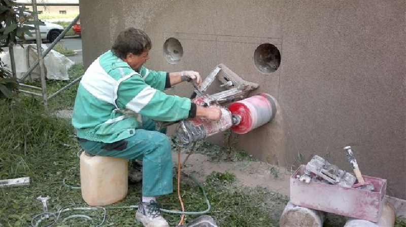

Jádrové diamantové vrtání betonu
Jsme specialisté na jádrové vrtání speciálních otvorů do zdiva v bytových jádrech, betonu či železobetonu. Předností jádrového vrtání je usnadnění a zjednodušení provádění přestaveb. Zaručí vrtání přesných kruhových prostupů pro potrubí, kabelové trasy či instalace. Neváhejte se na nás obrátit a využijte všech výhod, které vám jádrové vrtání nabízí!
Vypracujeme vám cenovou nabídku jádrového vrtání zdarma. Kontaktujte nás!
Technologie jádrového vrtání využívá moderní diamantové techniky, která se řadí mezi špičku světové úrovně v oblasti vrtání díky nadčasovému technickému řešení jednotlvých otvorů. Má také nejvyšší stupeň bezpečnosti a pracovního komfortu, navíc použití vakuového efektu při kotvení vrtací soupravy je garancí nepoškození okolního povrchu.
Nabízíme komplexní služby v oblasti vrtání
- jádrové vrtání železobetonu, keramických panelů, kamenných stěn, cihlového zdiva
- zhotovení průchodu pro elektro rozvody, vodoinstalace, plyn, vzduchotechniku a navrtávky kanalizačních přípojek
- využití pro odvrtání betonových bloků
- sondy, průzkumné vrty
- možnost využití vakuového efektu při kotvení vrtací soupravy - nepoškozuje okolní povrch
Tuto metodu lze použít i pro vytvoření různých tvarů otvorů - čtvercové, obdélníkové apod.
Využijte schůzky s odborníkem zdarma!
Využijte našich komplexních služeb zahrnující schůzku a obhlídku objektu naším odborníkem zcela zdarma. Poradíme a navrheme vám vhodné řešení jádrového vrtání k vaší maximální spokojenosti. Samozřejmě s přihlédnutím na vaše přání a požadavky. Využijte našich služeb jádrového diamantového vrtání a přesvědčte se o našich kvalitách sami!
Máme zkušené pracovníky s mnoha osvědčeními, kteří jsou vám zárukou toho nejlepších služeb.000
Působíme na trhu více jak 20 let a využití prvotřídní světové diamantové techniky spolu s dobře odvedenou prací a individuálním přístupem k zákazníkovi nás řadí mezi špičku ve východočeském regionu. Máme mnoho spokojených zákazníků - zařaďte se mezi ně i vy.